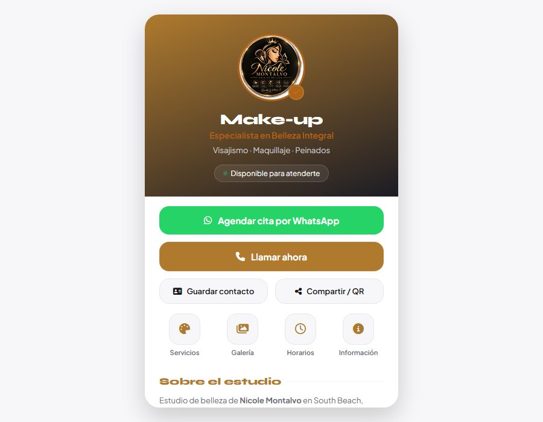

Make-up — Nicole Montalvo · Belleza integral
Belleza · Maquillaje profesional y visajismo · Tarjeta digital
5 servicios con su descripción
Instalable como app en el celular
Cita agendada por WhatsApp
Antes: cada consulta de una clienta nueva —qué servicios hay, cuáles son las especialidades, en qué horario atiende y dónde queda el estudio— se resolvía en conversaciones sueltas de WhatsApp, sin un enlace donde ver la oferta completa.
Después: la tarjeta reúne perfil, servicios, horarios, ubicación y correo en un solo enlace compartible, y el botón principal abre el chat del estudio con el mensaje de la cita ya escrito.
Ver proyecto en vivo